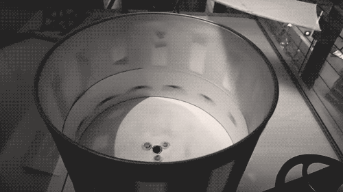
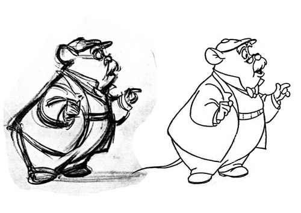

Principles & History of Animation
Was ist Animation?
Beispiel: Flippen zwischen 2 Frames
Das Gehirn erkennt bereits eine Bewegung:
“Das ist dasselbe Objekt!”
NICHT: Trägheit des Auges
die sorgt “nur” fürs Verschmelzen von Bildern u. Bewegungsunschärfe
Beispiel: Thaumatrop schnell gedreht

Man braucht einen Shutter, damit die Trägheit des Auges das Bild nicht verwischt
z.B. Schlitze beim Zoetrop

Beta-Bewegung
sensorische Wahrnehmung als “echte” Bewegung bei Abständen die nah beieinander liegen
kognitive Interpretation bei Abständen die weiter auseinander liegen
Definition
Animation: Das Zeigen von Bildern in schneller Abfolge…
mit dem Ziel die Illusion einer Bewegung zu erzielen…
mit Material, das sich nicht von selbst so bewegt,…
zur Kommunikation mit einem Publikum.
Kommunikation = Vermitteln von Informationen, Erzeugung von Empathie, Reaktion, Emotion
Animations-Techniken
Traditional Animation
Rough Animation
Rough Pencil Test - Beauty and the Beast - Glenn Keane

Rough Animation - Animator
- Die wichtigesten Momente = Key-Poses
- Die Essenz der Bewegung und Emotion
Inbetween - Animator oder Assistent
Clean up - Clean up Artist
- Skizze reinzeichnen
- Saubere Linien auf Folie übertragen

Coloring - Color Artist
The Simpsons - Animation Cel
Multiplane Camera
Multiplane Kamera bei Disney
erfunden von Lotte Reiniger
Abenteuer des Prinz Achmed, 1926
erster noch erhaltener Animationslangfilm
Stop Motion
Modeling

UV Mapping, Texturing, Shading
Rigging
Animation
Rendering
Tradigital
2D Rigs
Meilensteine der Geschichte (work in progress)
Stoptrick
1898
Un homme de têtes - The four troublesome heads, George Méliès
Stoptrick mit Zeichnungen
Enachanted Drawing
Stuart Blackton 1900
Bildreihen ergeben “flüssige” Bewegung
Humorous Phases of Funny Faces
Stuart Blackton 1906
Fantasmagorie
Émile Cohl 1908
Gertie the Dinosaur
Winsor McCay, 1914
Golden Age
Disney
Warner Bros. (Looney Tunes)
Fleischer
MGM
Hanna Barbera
CGI in Star Wars (1977)?
Star Wars - Attack Briefing
Disney Renaissance 1989 - 1999
Kunst- / Experimentalfilm
Oskar Fischinger
An Optical Poem (1938)
Cut Outs and Fäden
Synchron zu Musik, Vorreiter beim Tonfilm
Norman McLaren
Lines Horizontal, 1962
Gekratzt auf direkt auf Film
Verhältnis wie Maler zur Leinwand
Zutaten für gute Animation
3 Energieformen, welche die Bewegung eines Körpers bestimmen
- Physik
- Gravitation
- Gefühl fürs Gewicht
Jeder sieht täglich, dass sich schwere und leichte Objekte unterschiedlich bewegen.
Wir müssen entsprechend animieren.
- Design / Ästhetik
- Assoziationen zu Linien, Formen & Farben
- Lesbarkeit
- Lebensenergie
- Menschliche Reflexe, Emotionen & Natur
- Persönlichkeit (Gewohnheiten, Erfahrungen, Verhaltensmuster)
- Schauspielregeln
- Storytelling
Was ist eine interessante Situation?
12 Principles of Animation
Fachbergiffe der Animation geprägt von den Disney Animatoren um 1930
aufgeschrieben von Ollie Johnston und Frank Thomas 1981
Zwei der Nine Old Men
zur Diskussion von Animation unter Animatoren
und zur Schulung neuer Animatoren
Problem: Wilde, sprunghafte Liste
mischt Workflow mit Physik mit Designratschlägen
oft wird nicht erklärt, warum die Regeln so sind
WARUM ist wichtiger als WAS!
Deshalb: Demonstration an verschiedenen Beispielen
Beispiel: Großes und kleines Spacing in gleichem Timing
Timing (12)
Abständer der Frames auf der Zeitleiste
Anzahl der verstrichenen Frames insgesamt

Spacings (12)
Distanz der Bewegung von einem Frame zum nächsten
Großes Spacing = schnell
Kleines Spacing = langsam
Beispiel: Immer die gleichen Spacings
monoton
Kollision mit unsichtbarer Wand, weil Spacings vor und nach dem Richtungswechsel gleich sind
In der Realität müssen die meisten Dinge erst Geschwindigkeit aufnehmen
Eine Kraft lädt ein Element mit Momentum auf

Beschleunigung = Spacings werden immer größer
Bremsen = Spacings werden immer kleiner
Ease In/Out (= Slow In/Out) (12)
- Ease out: Mit größer werdenden Spacings aus dem Keyframe heraus
- Ease in: Mit kleiner werdenden Spacings in den Keyframe hinein
Keyframes: Wichtige Position der Bewegung (Start-, Endposition)
Physikalischer Hintergrund
Leichtes Objekt = geringe Masse
z.B. eine Kugel aus zerknülltem Papier
kann man einfach wegschnippen
geringe Trägheit
schweres Objekt = große Masse
z.B. ein schweres Buch
kann man nicht wegschnippen
hohe Trägheit
Geringe Masse
kleine Kraft reicht aus, um den Zustand zu ändern
Starten, stoppen, Richtungswechsel oft schneller
Große Masse
große Kraft erforderlich, um den Zustand zu ändern
Starten, stoppen, Richtungswechsel oft langsamer
Trägheitsgesetz
Ein Element bleibt in dem Zustand, in dem es gerade ist.
Es sei denn, eine nicht-ausbalancierte Kraft wirkt darauf ein.
Beispiel: Ball liegt auf dem Tisch
Gravitation vs. Druck des Tisches = ausbalancierte Kräfte
Beispiel: Ball wird von Astronaut im schwerelosen Weltraum geworfen
Während des Wurfs unbalancierte Kräfte
Nach Verlassen der Hand wirkt gar keine Kraft mehr auf den Ball
Ball bewegt sich wegen des Momentums, nicht wegen einer Kraft
Er würde unendlich weiterfliegen
Warum hört ein Fußball auf der Erde auf zu rollen?
Gravitation drückt den Ball in den Boden
Die Reibung mit dem Boden wirkt als unbalacierte Kraft und baut das Momentum ab.
Antizipation (12)
Damit sich Objekte bewegen, müssen sie mit Momentum aufgeladen werden
d.h. Elemente brauchen eine Strecke, auf der eine Kraft das Momentum auflädt
Beispiel: Ballwurf
Lasse ich den Ball einfach los ohne auszuholen, fällt dieser gerade zu Boden
Ball hatte kein Momentum
Beim Ausholen (der Antizipation) lädt man mit einer Kraft das Momentum auf - bis man loslässt
Credit: I want to be an animator
Antizipation kündigt die folgende Bewegung an
lenkt Blick und Aufmerksamkeit
Folgebewegung kann sehr schnell sein

Credit: I want to be an animator
Freier Fall
Schwere Elemente = mehr Kraft um Zustand zu ändern
Leichte Elemente = weniger Kraft um Zustand zu ändern
Video BBC: Bowlingkugel und Feder
ABER - schwere und leichte Objekte fallen gleich schnell
wenn sie aufgrund der Form nicht vom Luftwiderstand gebremst werden
Kraft der Gravitation ist
- kleiner bei leichten Objekten
- größer bei schweren Objekten
Deshalb beschleunigen diese beim freien Fall gleich
Der freie Fall hat dennoch eine Aussagekraft
- Höhe des Falls
- Größenordnung des Objektes
Fall aus 1,2 Metern Höhe = 0.5 Sekunden
Fall aus 20 Metern Höhe = 2 Sekunden
d.h. ein Riese bewegt sich langsamer als eine kleine Fee
Timing
Rhythmus eines Riesen ist anders als der Rhythmus einer kleinen Fee.
Was beeinflusst den Rhythmus?
Tendenziell lansgamer
- schwer
- groß
- weit entfernt
- traurig, deprimiert
Tendenziell schneller
- leicht
- klein
- nah
- glücklich, motiviert
Kreative Freiheiten bei der Physik
besonders zur Erzeugung von Emotion
Demonstration:
Frame by Frame freier Fall - Bouncing Ball
Spacing-Muster:
- Odd Rule (immer den nächsten ungerade Wert Abstand)
- Spacings halbieren
Kollision
Momentum wird in Kraft umgewandelt
hohes Momentum = viel Kraft
geringes Momentum = wenig Kraft
Beispiel: Bowlingkugel trifft Boden
hohes Momentum = viel Kraft = zerstört ggf. Boden
Nicht mehr genug Kraft, um die Bowlingkugel hochhüpfen zu lasen
Beispiel: Tischtennisball trifft Boden
geringes Momentum = wenig Kraft = Boden hat kein Problem Kraft zu reflektieren
geringe Kraft reicht, um Ball wieder hochhüpfen zu lassen

Follow Through and Overlapping action (12)
Verbundene Elemente starten und stoppen in einer Kette
Erst das führende Element,
dann das folgende Element 1,
folgende Element 2, 3, 4 etc.
Follow through: Ein Element zieht nach
Overlapping action: Elemente kommen zu unterschiedlichen Zeiten zum stehen
Beispiel: Ball in einem Kochtopf wird über den Tisch gezogen
Was passiert, wenn der Kochtopf abbremst?
Eine Kraft bremst den Kochtopf ab,
aber der Ball hat noch volles Momentum und möchte weiter
Beispiel: Umhang
Person im Umhang beginnt Bewegung, Stoff folgt erst sobald er muss
Person im Umhang bremst ab, Stoff steckt noch voller Momentum und schwingt aus
Ausschwingen wird durch Länge des Umhangs und Schwerkraft begrenzt
Arc (12)
Elemente bewegen sich oft entlang einer Kurve
Warum?
Parabelform durch Gravitation

Rotation um ein Gelenk herum
Solid Drawing (12)
Erzeugen eines konsistenten 3D Volumens
3D trotz “flacher” Zeichnung
Objekte ändern ihr Volumen nicht
Anatomische Korrektheit
Squash & Stretch (12)
Zusammenquetschen bei Krafteinwirkung
Strecken bei Freisetzung der Kraft
simuliert Bewegungsunschärfe
in beiden Fällen sollte das Volumen erhalten bleiben
Exaggeration (12)
“Mehr” als die Realität
Übertreibung
aber auch Reduktion
Ziel ist nicht Entfernung von der Realität
sondern Überhöhung der Realität
und unmissverständliche Lesbarkeit
Realismus und Glaubwürdigkeit der Emotionen
Secondary Action (12)
Eine zweite Gesete (oft in einem anderern Tempo) neben der Hauptbewegung
Mit Finger am Kinn tippen, während des Nachdenkens

Alan Becker, 12 Principles of Animation
Probleme:
- Kann Ablenken oder Verdecken
- Kann zu schnell gehen

Appeal (12)
Der Charme der Animation
Klassischerweise: Kindchenschema
Große Augen, großer Kopf
muss nicht unbedingt “schön” sein
= Interesse wecken, emotionale Verbindung schaffen